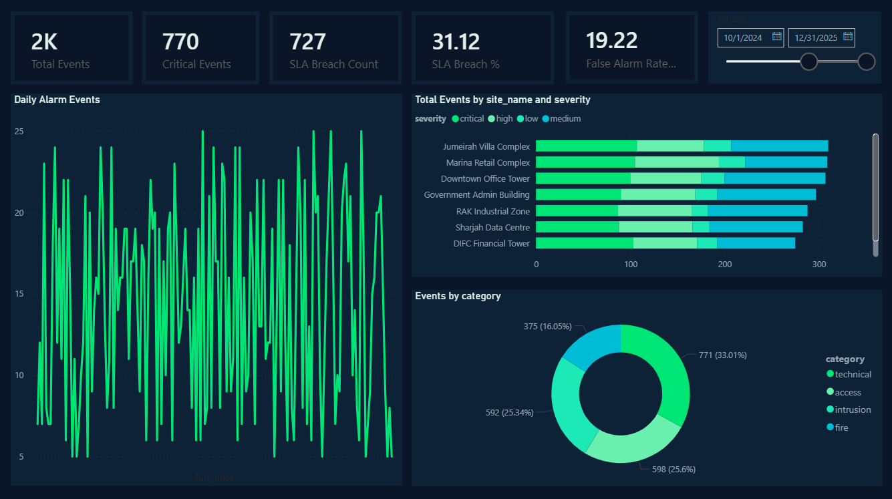
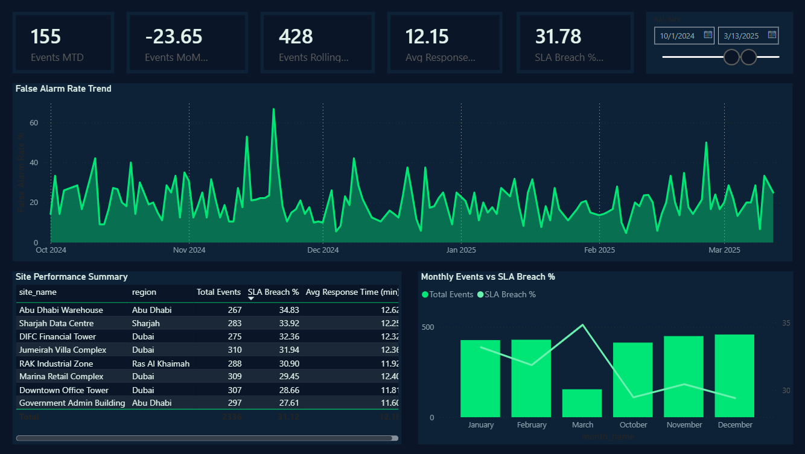
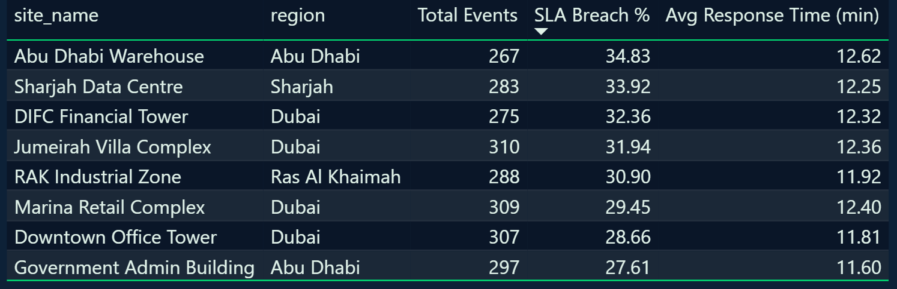
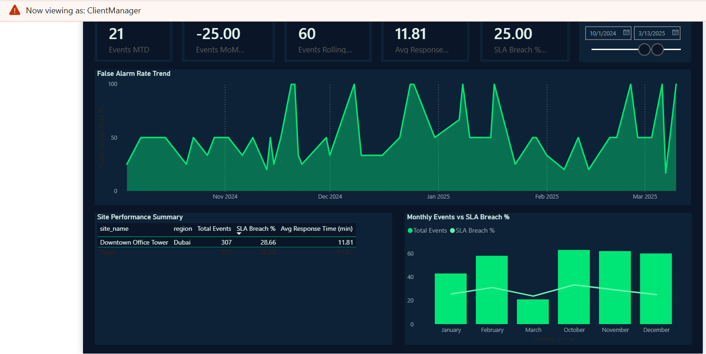

Ops Intelligence Platform
End-to-end data engineering and business intelligence pipeline for security operations analytics — from raw alarm events to executive dashboards.
Project Objective
The primary objective of this project was to design and build a production-grade data engineering pipeline that transforms raw security alarm event data into actionable business intelligence. Security operations centres generate thousands of alarm events daily across multiple client sites, but without a structured data warehouse and reporting layer, this data remains siloed and difficult to analyse at scale.
The goal was to architect a scalable ETL pipeline ingesting from multiple source systems — REST APIs, CSV flat files, and PostgreSQL transactional databases — into a star schema data warehouse, then surface meaningful KPIs and trends through Power BI dashboards. The platform needed to support Row-Level Security so that client managers only see data for their own sites, and include a robust data quality layer that validates, cleanses, and logs rejected records automatically.
Project Description
The Ops Intelligence Platform is built on four layers working in sequence. The extraction layer uses a Python-based REST API connector with a synthetic data fallback for local development, plus a CSV extractor for flat file ingestion. The transformation layer applies five validation rules to every record — required field checks, timestamp parsing, status validation, non-negative numeric checks, and temporal consistency verification — rejecting any records that fail and logging them to a dead-letter table for investigation.
The loading layer performs bulk batch inserts into a PostgreSQL star schema using execute_values for performance, with a dimension key cache to avoid repeated lookups and an ON CONFLICT DO NOTHING strategy for idempotency. After each load, a summary refresh task upserts pre-aggregated daily KPIs per site into a fact_daily_site_summary table, improving Power BI query performance significantly.
The entire pipeline is orchestrated by an Apache Airflow DAG running on a daily schedule, with five tasks in sequence: extract → transform → load → summarise → quality gate. The quality gate task fails the DAG run if the loaded record count falls below a minimum threshold, providing an automated alert for source system or pipeline failures.
The Power BI layer connects directly to PostgreSQL via the native connector, with twelve DAX measures covering core KPIs, time intelligence (MTD, YTD, rolling 30-day, month-over-month change), and site performance rankings. Row-Level Security is configured with two roles — ClientManager and RegionOperator — using USERPRINCIPALNAME() to dynamically filter the site dimension based on the logged-in user's identity, ensuring data isolation between clients.
Key Achievements
Technologies & Methods
Results & Visualizations
1. Operational Dashboard — Live KPIs & Event Monitoring

The Operational Dashboard provides day-to-day visibility across all client sites. The top row of KPI cards displays total events (2K), critical events (770), SLA breach count (727), SLA breach percentage (31.12%), and false alarm rate (19.22%) — all dynamically filtered by the date slicer. The Daily Alarm Events line chart (bottom-left) visualises event volume across Oct 2024 to Mar 2025, allowing operators to spot unusual spikes or quiet periods that may indicate sensor faults or service disruptions. The stacked bar chart (top-right) breaks down total events per site by severity — critical, high, medium, and low — making it immediately clear which sites carry the highest risk load. The Events by Category donut chart (bottom-right) segments all events into fire (16%), access (25.3%), intrusion (25.6%), and technical (33%) categories, supporting resource allocation decisions. The date slicer enables instant filtering to any custom time window without changing any report pages.
2. Executive Summary — Trend Analysis & Performance Overview

The Executive Summary page is designed for management-level reporting, surfacing time-intelligence metrics and long-range trends. The five KPI cards across the top show Events MTD (155), Events MoM Change % (−23.65%), Events Rolling 30D (428), Avg Response Time (12.15 min), and SLA Breach % Rolling 30D (31.78%) — all calculated using DAX time intelligence functions including DATESMTD, DATESINPERIOD, and DATEADD. The False Alarm Rate Trend area chart spans the full date range, enabling identification of recurring false alarm patterns by site or season. The Site Performance Summary table ranks all eight sites by SLA breach percentage, providing a clear league table for operational review meetings. The Monthly Events vs SLA Breach % combo chart overlays event volume (columns) and SLA breach rate (line) per month, making it easy to assess whether higher event volumes correlate with service degradation. All visuals respond to the date slicer for flexible period-over-period analysis.
3. Site Performance Table — SLA Breach Ranking

The Site Performance Summary table presents a detailed ranked view of all eight client sites sorted by SLA breach percentage in descending order, making the worst-performing sites immediately visible. Abu Dhabi Warehouse leads with a 34.83% breach rate across 267 events, while Government Admin Building has the best performance at 27.61% across 297 events. The average response time column (ranging from 11.60 to 12.62 minutes against a 15-minute SLA target) shows that while all sites are within the response SLA on average, a significant portion of individual events are still breaching — indicating variance rather than systemic slowness. This table is powered by DAX measures calculated against the star schema, combining fact_alarm_events with dim_site and dim_alarm_type through the defined relationships. The data model design — with pre-aggregated fact_daily_site_summary and proper indexing on date_key and site_key — ensures the table loads in under two seconds even on Import mode with the full dataset.
4. Row-Level Security — ClientManager Role in Action

This screenshot demonstrates Row-Level Security (RLS) working correctly in Power BI. The "Now viewing as: ClientManager" banner confirms the active role filter. With RLS applied, the entire report — including all KPI cards, charts, and tables — is automatically scoped to only the sites belonging to that client. The Site Performance Summary table now shows only Downtown Office Tower (307 events, 28.66% SLA breach rate, 11.81 min avg response) instead of all eight sites. The MTD, MoM, and Rolling 30D measures also recalculate against the filtered dataset — Events MTD drops to 21 and SLA Breach % to 25.00%, reflecting only that client's events. RLS is configured in the Power BI data model using a DAX filter on dim_site that calls LOOKUPVALUE() against dim_user[email] matched to USERPRINCIPALNAME(). This means that in production, when a client manager logs into Power BI Service, they automatically see only their own sites — no manual filtering required and no risk of data leakage between clients. This security model is a core requirement for any multi-tenant BI deployment.
Conclusion
The Ops Intelligence Platform demonstrates a complete, production-grade data engineering workflow — from raw source ingestion through validated ETL to interactive Power BI dashboards with enterprise security controls. By combining Python-based pipeline engineering with a well-modelled star schema and DAX time intelligence, the platform transforms noisy alarm event data into clear operational and executive insights that support both day-to-day monitoring and strategic decision making.
The Airflow orchestration layer ensures the pipeline runs reliably on a daily schedule with automatic retries and a quality gate that catches data anomalies before they surface in dashboards. The dead-letter logging system provides full auditability of every rejected record, supporting data governance requirements. Row-Level Security ensures the platform is safe for multi-client deployment, with each client manager seeing only their own site data without any manual intervention.
Future enhancements include migrating the warehouse layer to ClickHouse for sub-second analytical queries at larger scale, connecting live alarm event streams via Apache Kafka for near-real-time dashboard refresh, adding a Power Apps data entry form for manual event logging, and configuring Power Automate alerts that trigger email notifications when SLA breach percentage exceeds a defined threshold — completing the full operational intelligence loop from data ingestion to automated response.